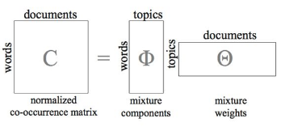

14.1 LDA Topic Modeling
A probabilistic mixture of topics for each document.
These notes walk through the lecture slides. The original deck is unchanged; use (slides) on the course hub if you want that PDF.
1. A generative story, not only a factorization
Week 13 factored the document-term matrix with SVD (and previewed NMF). Latent Dirichlet allocation (LDA) is a different object: a generative statistical model.
The story:
- A document is a mixture of topics, not a single label.
- A topic is a distribution over words.
- Most documents use only a few topics, and most words in a topic are rare. Sparse Dirichlet priors encode that. The point is interpretability: a news piece is "mostly markets, a little politics," not a uniform smear over 50 themes.
You still pick the number of topics (k). LDA does not discover (k) for you.
2. Two matrices you will print
LDA is often drawn as a factorization of a (normalized) term–document matrix ({\bf C} \approx {\bf \Phi}\,{\bf \Theta}).

| Matrix | Axes | Entry | Words |
|---|---|---|---|
| ({\bf \Phi}) | words × topics | (\phi_{ij} = P(w_i \mid z_j)) | How likely is this word under this topic |
| ({\bf \Theta}) | topics × documents | (\theta_{ij} = P(z_i \mid d_j)) | How much of this document is this topic |
To label a topic, sort a column of ({\bf \Phi}) and read the top words. To label a document, sort a column of ({\bf \Theta}).
Those probabilities are why LDA topics are easier to show a client than SVD factors with minus signs.
3. How the algorithm runs
Input. A bag-of-words corpus and a number of topics (k).
Initialize. Random (or mildly informed) ({\bf \Theta}) and ({\bf \Phi}).
Iterate. For each word token in each document, resample its topic using the current document–topic and topic–word estimates. This is the inference loop (collapsed Gibbs, variational Bayes, or a library default). Repeat until the assignments stop moving much.
Output.
- a topic for every token, hence a topic mix per document
- a word distribution per topic
You never see the "true" topics. You see the estimates that best explain the counts under the model.
4. When LDA is the right tool
Use it when you want readable word lists, you have no document labels, and you want a mix (not a hard cluster) per document. It works across domains and languages if you preprocess honestly. You can run it on successive months and watch a topic's mass move. The (k)-dimensional (\theta) is a usable feature for later classification.
Watch out.
| Issue | What you do |
|---|---|
| Choosing (k) | Try several; use coherence (note 14.3), not only likelihood |
| Topics are static | A single LDA does not model drift; run it on windows |
| Bag of words | Word order is gone. Not happy ≈ happy |
| Sparse (\Phi) on huge vocabularies | Aggressive stop lists and min-count cutoffs |
| Flat model | No natural hierarchy (sports → baseball) |
| Preprocessing | Tokenization and stops change the topics more than the optimizer does |
| Priors | (\alpha) (document–topic) and (\beta) (topic–word) need a sweep |
Libraries (gensim, scikit-learn) hide the sampler. They do not hide the need to read the top words.
A first lab recipe: 10–20 topics, default priors, print 10 words per topic, drop obvious junk, rerun. Then change (k). Do not start by sweeping five knobs at once.
LDA on raw HTML or on a corpus that still contains "click here" will discover a "navigation" topic. That is a cleanup miss, not a reason to drop LDA.
5. Practice
-
A document has (\theta = (0.7, 0.2, 0.1)). What does that say, and why is that richer than assigning the document to topic 1 only?
-
Why does a sparse Dirichlet prior help a human who has to name the topics?
-
You stem aggressively and drop a custom stop list. The topics look worse. Is that an LDA bug? What do you change first?
Change the tokens before you change the sampler. LDA cannot undo a bad vocabulary.